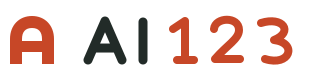

发现 AI 创造的好网站。
人与 AI 共创的网页、工具与知识，按主题找到，打开就能用。
博物馆与文物城市与旅行交互工具学习资料
没有找到匹配作品。试试“苏博”，或清空搜索。
AI 作品门户
从人与 AI 共创的导览、工具和知识网页出发。
像熟悉的网址导航一样好找，也让每一份新作品有自己的入口。

A，也是一道入口。 / 推荐标志方向亲切 / 清楚 / 有活力
暖白承载长目录，墨色保证好读，朱橙只点亮品牌和关键行动。保留早期导航站“打开就知道怎么用”的亲切感，用更清楚的层级呈现今天的内容。
同一品牌下的三种符号方向
拱形门洞与 A 合并。轮廓简单，从标签页到页头都能使用，表达“从这里进入”。
呼应 1、2、3，强调简单开始。有节奏感，但也容易被看成信号图。
直接表达聚合与发现，容易理解；与常见应用图标接近，独特性较弱。
首页局部应用示意 · 可输入搜索
使用当前唯一公开作品示意；不是新版网站的功能交付。
人与 AI 共创的网页、工具与知识，按主题找到，打开就能用。
没有找到匹配作品。试试“苏博”，或清空搜索。
切换仅影响上方页面示意的背景、链接和高亮；品牌标志保持原方案，方便比较搭配。推荐朱橙，给作品门户更温暖、醒目的第一印象。